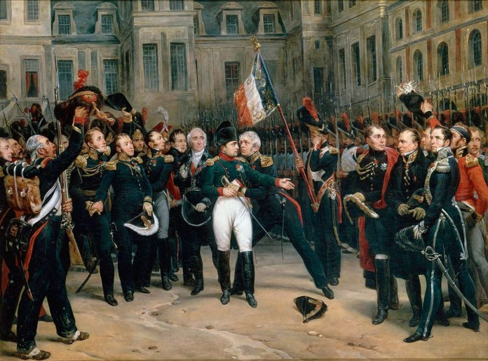

Sau trận Arcis Sur Aube, Napoléon định đánh vào hậu phương của quân địch để cắt đứt liên lạc của họ với sông Rhine, nhưng quân Liên Minh đã quyết tâm tiến thẳng về Paris.
Những bức thư của Hoàng Hậu Marie Louise và của Bộ Trưởng Bộ Công An Savary viết cho Napoléon, bị quân Cossacks chặn bắt được, đã làm cho. Aleksandr tin chắc rằng ở Paris người ta không hy vọng gì vào cuộc kháng chiến toàn dân và nếu quân Liên Minh vào được thủ đô thì sẽ kết thúc được chiến tranh, sẽ quyết định luôn cả sự sụp đổ của Napoléon. Quân Liên Minh đi được đến bước quyết định ấy là nhờ có Pozzo di Borgo, người đảo Corsica; Borgo là kẻ vốn có mối thù với Napoléon từ lâu, và chính vì thế nên đã được Aleksandr tin cậy. Sau trận Arcis Sur Aube, khi quân Liên Minh được tin là Napoléon định cắt đường liên lạc của họ, thì Borgo tuyên bố: “Mục tiêu của chiến tranh là ở Paris. Chừng nào các ngài còn nghĩ đến giao chiến thì các ngài còn bị đánh bại, vì bao giờ Napoléon cũng nghênh chiến hơn các ngài, và vì binh lính của Napoléon, mặc dầu bất mãn nhưng do danh dự thôi thúc, họ sẽ hy sinh đến người cuối cùng ở bên cạnh Napoléon. Dẫu quyền lực quân sự của Napoléon có bị phá tan, Napoléon vẫn vĩ đại, rất vĩ đại nữa kia, và dẫu thiên tài của Napoléon có bị đánh đổ, song vẫn vĩ đại hơn các ngài. Nhưng quyền lực chính trị của Napoléon thì đã bị thủ tiêu. Thời thế đã thay đổi. Nền chuyên chế quân sự được thừa nhận là một công lao sau ngày Cách Mạng, nhưng kết quả của nó đã bị lên án từ lâu và hoàn toàn bị mất tín nhiệm. Phải tìm cách chấm dứt chiến tranh bằng chính trị, chứ không phải bằng quân sự, và muốn thế thì ngay khi địch có một chỗ hở nào đó có thể thọc qua được, và các ngài hãy lợi dụng ngay chỗ đó, cấp tốc kéo về Paris, dùng ngón tay khẽ đụng vào Paris, chỉ cần dùng ngón tay thôi, là kẻ khổng lồ ấy sẽ bị đổ nhào. Các ngài sẽ bẻ gãy được thanh kiếm mà các ngài không thể nào tước nổi được của hắn ta”. Pozzo di Borgo tin chắc rằng nhân dân đã quên bẵng dòng họ Bourbon, như hắn đã nói với Khối Liên Minh, vả lại chính Khối Liên Minh cũng đã nhận định như vậy. Khối Liên Minh đồng ý với Borgo về điểm cho rằng sau khi Napoléon đã bị lật đổ thì dòng họ Bourbon sẽ trở thành “có khả năng”.
Thấy có khả năng thanh toán được Napoléon mà không phải trở lại cái vấn đề Cộng Hòa vô cùng khó chịu, Aleksandr cho là không cần thiết phải nói tới nền Cộng Hòa nữa. Quân Liên Minh quyết định hành động mạo hiểm. Lúc này Napoléon đang đi xa, cũng đúng là để đánh vụ hồi vào sau lưng quân Liên Minh nhằm kìm chân họ lại không cho tiến lại gần Paris. Lợi dụng sự đi xa ấy của Napoléon và tin tưởng vào bọn phản bội sẽ nộp kinh thành trước khi đích thân ông Hoàng Đế về được đến nơi, nên quân Liên Minh đã quyết định tiến thẳng đến Paris. Đường về Paris do hai Thống Chế Marmont và Mortier cùng với hai tướng Pacthod và Amey án ngữ: Cả thảy có hai vạn rưỡi quân. Napoléon đã cùng với quân chủ lực tiến xa về phía Đông. Ngày 25 tháng 3, thắng trận ở Fère Champenoise, quân Liên Minh đã đẩy lùi được hai Thống Chế trên đường về Paris và 10 vạn quân Liên Minh đã xuất hiện ở ngoại vi thủ đô. Ngày 29 tháng 3, Hoàng Hậu Marie Louise rời Paris đi Château de Blois cùng với chú vua nhỏ thành Roma. Để phòng giữ Paris, quân Pháp bố trí khoảng 4 vạn quân. Khủng khiếp đè nặng kinh thành, tinh thần quân đội bạc nhược. Aleksandr muốn tránh được một cuộc đổ máu dưới chân thành Paris giả bộ đóng vai một kẻ chiến thắng đại lượng. “Thiếu lực lượng phòng giữ và thiếu người thủ lĩnh vĩ đại, Paris không thể kháng cự được; tôi tin tưởng sâu sắc như vậy”, đó là lời của Nga Hoàng nói với Orlov trong lúc trao cho Orlov tờ thiếp trắng để đình chỉ trận đánh mỗi khi thấy hé ra hy vọng thủ đô Pháp sẽ đầu hàng không chiến đấu. Trận đánh ác liệt diễn ra nhiều giờ liền; quân Liên Minh đã hao tổn 9 nghìn người, trong đó có chừng 6 nghìn quân Nga, nhưng rã rời vì lo sợ bị thất bại và bị Talleyrand thúc đẩy nên ngày 30 tháng 3, vào hồi 5 giờ chiều, Thống Chế Marmont đã đầu hàng.
Napoléon nhận được tin quân Liên Minh đánh bất ngờ vào Paris giữa lúc ông ta đang giao chiến ở khoảng giữa Saint Dizier và Bar Sur Aube. “Thật là một trận thất bại hoàn toàn. Và chưa bao giờ tôi ngờ được rằng tướng tá của quân Liên Minh lại có thể làm được việc đó!” Napoléon nói như vậy vào ngày 27 tháng 3, khi người ta báo cho ông tin ấy. Những lời khen ngợi ấy, trước hết, là lời của một nhà chiến lược trong người Napoléon.
Napoléon cùng với bộ đội cấp tốc quay về Paris. Về đến Fontainebleau đêm 30 tháng 3, Napoléon được tin trận đánh vừa kết thúc và Paris đã đầu hàng. Cũng như bất cứ bao giờ, Napoléon vẫn đầy cương nghị và kiên quyết. Sau khi nắm được tình hình của sự biến, Napoléon im lặng mười lăm phút, rồi trình bày cho Caulaincourt và các tướng tá bên cạnh ông biết kế hoạch mới, Caulaincourt về Paris để nhân danh Napoléon giảng hòa với Aleksandr và quân Liên Minh, với những điều kiện như Hội Nghị Châtillon đã đề ra. Caulaincourt phải làm sao tìm đủ mọi cớ để đi đi lại lại giữa Paris và Fontainebleau nhằm kéo dài thời gian ra ba ngày, thời gian cần thiết để Napoléon có thể điều động mọi lực lượng sẵn có từ vùng Saint Dizier về, sau đó sẽ tống cổ quân Liên Minh ra khỏi Paris. Caulaincourt ấp úng hỏi rằng tại sao không thể đem lại cho phe Liên Minh một hòa ước thật sự, không phải là một thủ đoạn chiến tranh. “Không, không! - Hoàng Đế ngắt lời - Không thể bị ê chề! Không thể hòa bình nhục nhã! Đây là vấn đề thanh danh của nước Pháp, vinh dự của nước Pháp! Trong trận chiến đấu cuối cùng, chỉ có gươm đao, gươm đao phải quyết định điều đó!” Caulaincourt lại đi ngay Paris, còn Napoléon lại dốc hết tâm lực để chuẩn bị gấp rút cho trận đánh, trong ba, bốn hôm nữa sẽ diễn ra, theo dự kiến của ông ta. Chủ yếu Napoléon cho rằng trong thời gian ngắn ngủi ấy, quân Liên Minh không thể tiến hành được một cuộc vận động chính trị quyết định nào có thể làm mất tinh thần và lôi kéo quần chúng đang do dự ngả về phía họ. Chính vì vậy mà Napoléon đã bày ra màn kịch đàm phán này và còn chịu nhận cả những điều kiện mà trước đây hai tuần Napoléon đã miệt thị bác bỏ. Nhưng tình thế đã hoàn toàn không cứu vãn được nữa. Bọn Bảo Hoàng vui mừng đón chào các vua chúa phe Liên Minh tiến vào Paris, đông đảo quần chúng nhân dân giữ thái độ lạnh nhạt và chịu khuất phục, tất cả những điều đó nói lên rằng thủ đô sẽ chấp nhận cái chính phủ mà người ta sẽ đặt ra cho họ. Trong một bản tuyên bố, bọn vua chúa Liên Minh nói rằng bọn họ sẽ không đàm phán với Napoléon, họ sẽ công nhận chính phủ và chính thể nào mà dân tộc Pháp ưng thuận lựa chọn.
Như vậy là cuộc đàm phán của Caulaincourt với quân Liên Minh đã không mang lại chút kết quả gì. Aleksandr nói trắng ra với Caulaincourt rằng nước Pháp đã quá chán ghét Napoléon, đã quá mệt mỏi vì ông ta. Schwarzenberg nhắc lại bằng một giọng chua chát rằng Napoléon đã làm rung chuyển cả thế giới trong 18 năm trời và không một ai có thể sống yên ổn được với Napoléon. Người ta đã không ngừng đem lại cho ông ta hòa bình, bằng cách công nhận đế quốc của ông ta nhưng ông ta không muốn nhượng bộ chút gì; bây giờ thì cũng đã quá muộn rồi. Trong lúc nói như vậy, Schwarzenberg không biết rằng ngay cả lúc ấy Napoléon vẫn không muốn nhân nhượng một chút gì và đã cử Caulaincourt đến chỉ là cướp lấy ba ngày cho bộ đội của ông ta kịp về tới. Khi quay về với Napoléon, Caulaincourt thấy tình hình như sau: Quân đội đang kéo về tập trung dần dần, ông Hoàng Đế tính đến ngày 5 tháng 4 sẽ có trong tay 7 vạn quân và sẽ cầm đầu đoàn quân đó tiến về Paris. Sáng ngày 4, Napoléon đi duyệt đội ngũ. Hoàng Đế nói: “Hỡi các binh sĩ, quân thù đã chiếm của chúng ta ba biên trấn, chúng đã tới làm chủ Paris. Phải tống cổ chúng đi! Những tên Pháp gian, những tên lưu vong, mà xưa kia chúng ta đã nhu nhược không trừng trị, đã cấu kết với nước Anh và đã trương cờ trắng. Những kẻ hèn hạ đó! Chúng sẽ phải đền tội một cách thích đáng. chúng ta hãy thề thắng trận hoặc là chết, hãy thề rửa nhục cho Tổ Quốc và Quân Đội chúng ta”. Binh sĩ hô lớn: “Xin thề!”. Nhưng sau khi duyệt binh, quay về lâu đài thì ở đó Hoàng Đế thấy một tình hình tư tưởng hoàn toàn khác. Các Thống Chế Oudinot, Ney, MacDonald, Berthier, công tước Bassano đứng trước Napoléon với vẻ rầu rĩ lặng lẽ và không ai dám nói một lời. Napoléon gặng hỏi. Họ trả lời rằng họ không còn hy vọng chiến thắng nữa, rằng toàn thể nhân dân Paris, không phân biệt chính kiến, đều run sợ khi biết Hoàng Đế chuẩn bị công kích quân Liên Minh đã có ở trong thủ đô; như vậy, cuộc tiến công đó có nghĩa là thủ tiêu dân chúng và thành phố, bởi vì quân Liên Minh tất sẽ đốt cháy Paris để trả thù cho Moscow trước đây, và sẽ gặp khó khăn trong việc chỉ huy quân lính chiến đấu giữa cảnh hoang tàn của Paris. “Các người đi ra - Napoléon nói - tôi sẽ gọi và sẽ nói cho các người rõ ý định của tôi”. Hoàng Đế chỉ giữ lại Caulaincourt, Berthier và công tước xứ Bassano và ông tức tối phàn nàn về tinh thần do dự và bạc nhược của các Thống Chế, về sự thiếu tận tụy của họ đối với Hoàng Đế. Sau vài phút, Hoàng Đế tuyên bố với các Thống Chế rằng ông sẽ thoái vị, nhường ngôi cho con là chú vua nhỏ thành Roma, trao quyền nhiếp chính cho Hoàng Hậu Marie Louise, và nếu quân Liên Minh ưng thuận ký hòa ước với điều kiện như vậy thì chiến tranh sẽ kết thúc; ông sẽ cử Caulaincourt đến Paris, mang theo những kiến nghị đó, để thương lượng với quân Liên Minh.
Rồi Napoléon đọc cho các Thống Chế nghe bản tuyên bố mà ông vừa mới thảo xong: “Các cường quốc Liên Minh đã tuyên bố Hoàng Đế Napoléon là trở lực duy nhất cho việc lập lại hòa bình ở Châu Âu; trung thành với những lời thề của mình, Hoàng Đế Napoléon tuyên bố rằng: Vì lợi ích của Tổ Quốc gắn liền với quyền lợi của con Hoàng Đế, với quyền chấp chính của Hoàng Hậu và với việc duy trì luật pháp của đế chế, Hoàng Đế sẵn sàng thoái vị, rời bỏ nước Pháp và nếu cần cả cuộc đời nữa”. Các Thống Chế nhiệt liệt tán thành bản tuyên bố ấy. Sau khi đọc lại, Hoàng Đế cầm bút nhưng trước khi ký đã nói: “Này, các ông hãy tin ở tôi, sáng mai chúng ta sẽ đi và sẽ còn đánh bọn nó!”. Nhưng các Thống Chế im lặng. Không một ai hưởng ứng những lời nói ấy. Napoléon ký, rồi giao văn kiện cho một đoàn đại biểu gồm Caulaincourt, Ney, MacDonald. Bọn họ liền đi Paris ngay. Cũng trong lúc đó, biết bao biến cố đã xảy ra ở Paris, Talleyrand nhóm họp cấp tốc một bộ phận của Thượng Nghị Viện - gồm những kẻ được Talleyrand tin cậy - đã biểu quyết truất ngôi dòng họ Bonaparte và lập lại dòng họ Bourbon và biến cố nghiêm trọng hơn nữa là Marmont phản bội Hoàng Đế, đã cùng với quân đoàn của y rút về Versailles, như vậy là y đã chạy sang hàng ngũ Talleyrand và “chính phủ lâm thời” do Talleyrand điều khiển. Thoạt tiên, Aleksandr do dự: Cả Aleksandr lẫn ông Hoàng Đế Francis đều không phản đối gì lắm việc chú bé “Napoléon đệ nhị” lên ngôi, nhưng bọn Bảo Hoàng đứng vây quanh bọn vua chúa Liên Minh đã năn nỉ cố sao cho những đề nghị của Napoléon bị bác bỏ. Nhưng rồi họ đã không do dự nữa khi nhận được tin Marmont phản bội. Sự phản bội của các lực lượng chủ lực, do Napoléon trực tiếp chỉ huy đã làm cho Napoléon không thể tiến về Paris được nữa, và phe Liên Minh đã quyết định trao ngai vàng cho dòng họ Bourbon. Khi Caulaincourt từ giã Nga Hoàng trở về, Aleksandr nói rằng: “Ngài hãy khuyên nhủ Hoàng Đế của ngài nên tuân theo số mệnh”. Để một lần nữa tỏ lòng khâm phục “con người vĩ đại”, Aleksandr nói tiếp: “Tôi sẽ làm tất cả những điều có thể làm được vì danh dự của Napoléon”. Trước khi Caulaincourt đi, phe Liên Minh yêu cầu Caulaincourt cố nói sao cho Hoàng Đế thoái vị không điều kiện: Người ta hứa với Caulaincourt rằng sẽ giữ danh hiệu Hoàng Đế cho Napoléon và giao cho ông ta toàn quyền sở hữu đảo Elba, đồng thời họ nài nẫm về bản tuyên bố thoái vị được ký càng sớm càng hay. Phe Liên Minh và bọn Bảo Hoàng do Talleyrand cầm đầu lúc này đã ngang nhiên đứng về phía quân Liên Minh đều lo sợ trước một cuộc nội chiến có thể xảy ra và trước việc số đông quần chúng binh sĩ vẫn tuyệt đối trung thành với Napoléon. Chỉ có thể diệt trừ được những sự rối loạn khi bản thân ông Hoàng Đế ấy chính thức tuyên bố thoái vị. Lúc này nghị quyết của Thượng Nghị Viện chẳng có một chút giá trị gì về mặt tinh thần: Người ta coi các Thượng Nghị Sĩ như những kẻ tôi tớ của Napoléon, họ đã phản bội người chủ của họ không một chút do dự để đi hầu hạ một người chủ khác. Khi nói chuyện với Aleksandr, Ney đã thốt lên: “Cái Thượng Nghị Viện khốn kiếp ấy, đáng lẽ nó có thể làm cho chúng ta tránh được mọi đau khổ bằng cách bền bỉ như thế nào để chống lại khát vọng xâm lược của Napoléon; cái Thượng Nghị Viện khốn kiếp ấy, nó luôn luôn chịu vâng theo ý chí của con người mà ngày hôm nay nó gọi là bạo chúa, thế thì cái Thượng Nghị Viện ấy có quyền gì lên tiếng vào lúc này? Nó đã nín khi cần phải nói, vậy thì hiện nay ai cho phép nó được nói trong khi tất cả đều bắt nó phải câm đi”. Chỉ Napoléon, đích thân Napoléon, nói một lời mới có thể chấm dứt được tình trạng lưỡng nan nặng nề này, và có thể giải được lời thề khi xưa cho binh lính, sĩ quan, tướng lĩnh và viên chức của Napoléon. Đó là ý nghĩ của những người Pháp thuộc bất cứ đảng phái nào cũng như của phe Liên Minh.
Tối ngày 5 tháng 4, Caulaincourt, Ney và MacDonald từ Paris về đến Fontainebleau. Sau khi báo cáo với Napoléon về những cuộc bàn bạc với Aleksandr và phe Liên Minh. Caulaincourt, Ney và MacDonald khuyên Napoléon nên chịu theo tình thế; Napoléon nói rằng ông vẫn còn có một đạo quân, binh lính vẫn trung thành với ông. “Vả lại rồi khắc biết!... Mai đây!” Sau khi để mọi người ra, Napoléon cho gọi Caulaincourt tới. “Caulaincourt ạ, người đời, chao ôi, người đời!... Napoléon kêu lên như vậy trong cuộc chuyện trò kéo dài suốt đêm ấy.
“Các Thống Chế của tôi đi theo con đường của Marmont, rồi họ sẽ lấy làm hổ thẹn, vì khi nói đến Marmont lòng họ đầy giận giữ, nhưng họ cũng rất đáng giận bởi họ đã thả mình lao trên con đường danh lợi! Họ rất muốn được giữ nguyên chức vị dưới triều đại Bourbon mà không bị ô danh như Marmont”. Napoléon đã nói rất nhiều về việc Marmont phản bội ông ta trong giờ phút quyết định ấy. “Tên khốn kiếp không biết cái gì đang đợi chờ nó: Tên tuổi của nó sẽ bị ô nhục. Tôi không nghĩ đến tôi nữa, ông hãy tin như vậy, sự nghiệp của tôi đã hết hoặc sắp hết rồi. Vả lại, khi lòng người đã chán tôi và hướng về người khác, liệu còn thích thú gì nữa mà trị vì? Tôi nghĩ đến nước Pháp... Chà! Nếu bọn đớn hèn ấy không bỏ tôi, thì chỉ trong bốn tiếng đồng hồ là tôi sẽ khôi phục được thanh danh, ông hãy tin là thế, bởi vì với vị trí hiện nay của quân Liên Minh, sau lưng chúng là Paris và trước mặt chúng là tôi, chúng nhất định bị tiêu diệt. Để thoát khỏi nguy cơ đó, bọn chúng buộc phải rút khỏi Paris và sẽ không bao giờ trở lại được nữa. Thằng khốn khiếp ấy đã phá hoại cái kết quả tốt đẹp đó, nếu không, nhất định là chúng ta có cách để vươn dậy trong khi kéo dài chiến tranh.
Tôi được tin rằng ở, khắp mọi nơi, nông dân vùng Lorraine, Champenoise, Burgundy chọc tiết những quân địch đi lẻ. Hơn nữa, bọn Bourbon hiện đã về, có trời biết được cái gì sẽ đi theo chúng nó. Chúng nó là cái gì? Là hòa bình đối với nước ngoài, nhưng chiến tranh ở trong nước. Một năm nữa rồi ông thấy bọn chúng sẽ làm được những gì cho đất nước. Nhưng, bây giờ đây lại cần một cái gì khác chứ không phải tôi. Tên tuổi, hình ảnh, thanh kiếm của tôi đã gây sợ hãi. Đành phải chịu. Tôi sẽ gọi các Thống Chế đến, và ông sẽ thấy bọn họ vui mừng khi được tôi gỡ cho họ khỏi chỗ bối rối và cho phép họ làm như vậy mà vẫn giữ trọn được danh dự”.
Đêm ấy, Napoléon thổ lộ với Caulaincourt tất cả những điều mà chắc chắn là ông đã ngẫm nghĩ từ lâu; trong đó, điều nổi bật lên cự kỳ rõ rệt là sự mệt mỏi kinh khủng, chưa từng có của đất nước đang không sao chịu đựng được nữa cái triều đại đẫm máu, cái trò nướng sinh mạng không dứt, những cuộc tàn sát rùng rợn, những sự hiến dâng bao nhiêu thế hệ hy sinh cho mục đích không thể hiểu được. “Tôi muốn giữ vững cho nước Pháp là một đế quốc hoàn cầu”, Napoléon đã thành thật thú nhận như vậy vào năm 1814; lúc ấy, ông ta không biết rằng những thế hệ mai sau sẽ được chứng kiến một trường phái những nhà sử học yêu nước Pháp cố công gắng sức chứng minh rằng Napoléon suốt đời không đánh ai, mà chỉ là để tự vệ; nếu Napoléon đã đến Vienna, Milan, Madrid, Berlin, Moscow thì duy nhất chỉ là bảo vệ “biên giới thiên nhiên” của nước Pháp, và đến sông Moscow là để “bảo vệ” sông Rhine. Song chính Napoléon lại không nghĩ ra được lời giải thích đó.
Như vậy, nó còn thành thật hơn nhiều. Ông ta cũng không biết được con số tổng kê chính xác về các cuộc chiến tranh của mình; mãi mới đây, sau khi tìm kiếm trong toàn bộ những tài liệu lưu trữ chính thức và những tư liệu khác, Albert Menier mới xác định được, theo thống kê của ông, số công dân Pháp bị chết và bị mất tích trong các trận đánh và cách chiến dịch dưới thời Napoléon đã lên tới trên 1 triệu người (47 vạn người người bị chết chính thức ghi chép trong sổ sách và 53 vạn người mất tích hẳn). Đó là không kể số người bị thương nặng, bị tàn phế, không chết ngay ở chiến trường, mà ít lâu sau mới chết trong các viện quân y vì các vết thương của họ. Những con tính của Menier không bao gồm toàn đế quốc Napoléon, chỉ bao gồm: Nước Pháp “cũ” những “quận cũ”, nghĩa là không phải toàn bộ đất đai do Napoléon trị vì kể từ ngày 18 Tháng Sương Mù (bởi vì không tính nước Bỉ, xứ Piedmont, và những đất đai khác mà Cách Mạng và bản thân nó đã chiếm được trước ngày ông ta làm đảo chính), chỉ tính có nước Pháp trong phạm vi những đường biên giới vào năm 1799. Ngoài ra, cũng còn chưa tính đến tất cả các cuộc chiến tranh mà Napoléon đã tiến hành từ năm 1800 (nói một cách khác là còn gác ra ngoài những con số thiệt hại trong chiến dịch đầu tiên ở Ý vào năm 1796 - 1797, trong cuộc chiến tranh ở Ai Cập và ở Syria).
Như vậy là với dân số 26 triệu người, kể cả đàn bà và trẻ con, “các quận cũ” đã mất hơn 1 triệu người trong các cuộc chiến tranh của Napoléon. Napoléon không thể biết được điều đó một cách chính xác như vậy, tuy nhiên Napoléon cũng thấy được những làng mạc bị thưa thớt bởi những cuộc trưng binh, cũng thấy được những bãi chiến trường của vô số trận giao tranh của mình. Đôi lúc, chính bản thân Napoléon cũng thấy bồn chồn lo lắng và ông ta cố gắng an ủi người khác bằng cách vạch ra cho họ thấy binh lính trong quân đội Pháp, tức là tất cả những người lính Đức, Thụy Điển, Ý, Bỉ, Hà Lan, Ba Lan, Illyria, v.v. đã bị tiêu diệt nhiều hơn lính Pháp. nhưng sự tổn thất ba hoặc bốn triệu người ngoại quốc chiến đấu trong quân đội Napoléon, là một sự an ủi chẳng có giá trị gì đối với sự tổn thất một triệu người Pháp “chính cống”. Với Napoléon, hàng triệu quân địch bị giết, bị mất tích, bị tàn phá đã chẳng đáng để ông nói đến bao giờ. Trong suốt đêm dài ấy, đêm Napoléon đi đi lại lại trong những căn phòng của lâu đài Fontainebleau nguy nga và tẻ ngắt đó, đối diện Caulaincourt, làm một cuộc tổng kết, Napoléon chỉ rút ra một kết luận chủ yếu sau đây: Napoléon đã làm cho nước Pháp bị mệt mỏi suy nhược, đất nước đang sức cùng lực kiệt; chắc chắn bọn Bourbon chẳng làm nổi trò trống gì và sẽ không ai làm được việc hơn Napoléon làm được. Trong những ngày tháng 4 ấy, người ta báo cho Napoléon biết rằng nếu như các nhà buôn ở Paris và giai cấp tư sản không nhiệt tình đón tiếp quân Liên Minh bằng giới quý tộc Bảo Hoàng thì họ cũng đã lớn tiếng nói rằng họ bị chiến tranh tàn phá và xô đẩy đến bước đường cùng. Có thể nói rằng đêm ấy Napoléon không ngủ. Bình minh ngày mồng 6 tháng 4 hé rạng; Napoléon cho gọi các Thống Chế đến và nói rằng: “Xin các vị cứ yên tâm. Cả các vị và cả quân đội, sẽ không ai phải đổ máu nữa. Tôi ưng thuận thoái vị không điều kiện. Tôi đã những muốn vì các vị cũng như gia đình tôi mà trao quyền thừa kế cho con trai tôi. Tôi thiết tưởng cái kết cục như vậy sẽ có lợi cho các ngài nhiều hơn là cho tôi, vì hẳn là các ngài sẽ được sống dưới một chính thể thích hợp với gốc xuất thân, với tình cảm và lợi ích của các ngài. Điều đó có thể làm được, nhưng một sự phản bội bất chính đã cướp mất của các ngài cái hoàn cảnh sống mà tôi mong mỏi đem lại cho các ngài. Đáng lẽ chúng ta có thể làm được nhiều việc khác nữa, chúng ta có thể khôi phục được nước Pháp, nếu quân đoàn thứ 6 (Marmont) không phản bội. Nhưng sự việc đã khác hẳn rồi. Tôi đành tuân theo số phận của tôi, các ngài hãy tuân theo số phận của các ngài. Các ngài hãy cam chịu sống dưới triều đại Bourbon và phục vụ trung thành bọn chúng. Các ngài mong mỏi được nghỉ ngơi, thì để những linh cảm của tôi thành sự thật! Thế hệ chúng ta được sinh ra không phải để nghỉ ngơi, cảnh hòa bình mà các ngài ao ước sẽ giết chết nhiều người trong các ngài khi nằm trên nhung đệm hơn là cảnh chiến tranh dầm mưa dãi tuyết". Rồi Napoléon cầm lấy tờ giấy và đọc cho các Thống Chế nghe: “Khi các cường quốc Liên Minh đã tuyên bố Hoàng Đế Napoléon là trở lực duy nhất cho việc hòa bình ở Châu Âu, thì Hoàng Đế Napoléon, trung thành với lời thề của mình, tuyên bố rằng Hoàng Đế và những người thừa kế của Hoàng Đế sẽ từ bỏ ngai vàng nước Pháp và nước Ý, và vì lợi ích của nước Pháp, Hoàng Đế sẵn sàng hy sinh cá nhân, cho đến cả tính mạng của mình”.
Hoàng Đế ngồi vào bàn và ký tên. Các Thống Chế cảm động hôn tay ông và tíu tít tung ra hàng tràng những lời xu nịnh như họ đã từng làm trong suốt thời gian ông Hoàng Đế ấy trị vì. Caulaincourt cùng với hai Thống Chế đem ngay văn kiện ấy tới Paris. Aleksandr và phe Liên Minh vô cùng lo lắng đợi chờ kết cục. Khi đã nắm được bản tuyên bố thoái vị trong tay họ vui mừng khôn xiết. Aleksandr ưng chuẩn đảo Elba sẽ hoàn toàn thuộc chủ quyền của Napoléon, và con trai Napoléon, ông vua nhỏ thành Roma, cùng với Marie Louise sẽ được cấp những đất đai gọi là những vương hầu độc lập ở Ý. Tất cả đã xong xuôi.
Lúc này, Napoléon lại bị lôi cuốn vào cái ý nghĩ chắc hẳn đã nhiều lần ám ảnh ông trong suốt thời gian chiến dịch năm 1814, một chiến dịch vô cùng chói lọi về phương diện chiến lược, nhưng thực tế chỉ là một công trình truyệt vọng. Năm 1813, các Thống Chế, tướng lĩnh, sĩ quan, cần vụ và ngay cả binh lính đội cận vệ đều nhận thấy rằng ông Hoàng Đế đã liều mạng, tình thế đòi hỏi ông nhưng thực ra những trường hợp liều mạng ấy hoàn toàn vô ích, chứ không như trong các cuộc chiến tranh trước kia, ở cầu Arcole năm 1796, hoặc ở bãi tha ma Eylau năm 1807.
Như chúng tôi đã nói, vào năm 1813, sau cái chết của Duroc, Hoàng Đế ngồi lặng lẽ một chốc trên một rễ cây, không nhúc nhích và như một tấm bia làm mồi cho những mảnh đạn đại bác đang tung toé quanh mình. Năm 1814, những hành động khác thường ấy lại thấy diễn ra nhiều hơn và không còn ai là người không hiểu ý nghĩa của chúng nữa. Rõ nhất là trong trận Arcis Sur Aube ngày 20 tháng 3, khi lại một lần nữa đi tới cái địa điểm mà chính Napoléon đã hạ lệnh cho binh sĩ rút lui vì không thể giữ được nữa, thì tướng Exelmans đã lao tới Napoléon để ngăn lại, nhưng Thống Chế Sébastiani nói với tướng Exelmans: “Để mặc Hoàng Đế. Ông không biết là Hoàng Đế đã có dụng ý sao, Hoàng Đế muốn kết liễu đời mình”. Nhưng chẳng một làn đạn nào, một quả đạn đại bác nào muốn chạm vào Hoàng Đế. Napoléon luôn luôn thấy rằng tự tử là biểu hiện của sự yếu đuối và hèn nhát, và trong trận Arcis sur Aube, cũng như trước đây, trong trường hợp tương tự vào năm 1813 và năm 1814, trong khi đi tìm cái chết bằng một sự tự tử biến hình, không tự tay mình kết liễu lấy cuộc đời thì hiển nhiên là Napoléon đã tự dối mình.
Nhưng ngày 11 tháng 4 năm 1814, tức là năm ngày sau khi Napoléon thoái vị, trong khi ở lâu đài Fontainebleau, người ta đang sửa soạn cho Napoléon đi ra đảo Elba, thì sau khi cáo từ Caulaincourt, người mà Napoléon dành nhiều thời gian để gặp gỡ trong những ngày cuối cùng đó, ông đã lui về phòng riêng của mình. Sau này người ta phát hiện những đồ dùng cần thiết khi đi chiến dịch mà ông ta luôn luôn đem theo bên mình. Ở Fontainebleau, Napoléon phải cầu cứu đến nó và ông đã uống hết ống thuốc phiện. Những cơn đau đớn khủng khiếp đã dằn vặt ông dữ dội. Do linh tính báo trước điềm xấu, Caulaincourt vào phòng của Hoàng Đế và tưởng rằng Hoàng Đế bất thần bị bệnh, đã định chạy vội đi tìm viên thầy thuốc riêng của Hoàng Đế, nhưng Napoléon yêu cầu Caulaincourt đừng gọi ai cả và cũng đã giận dữ ra lệnh cấm Caulaincourt làm việc ấy. Những cơn co giật mỗi lúc một ác liệt thêm, đến nỗi Caulaincourt phải bỏ đi và đánh thức bác sĩ Ian, người đã pha chế thuốc phiện cho Hoàng Đế sau trận Maloyaroslavets. Nhìn thấy ống thuốc trên mặt bàn, bác sĩ hiểu ngay. Napoléon bắt đầu phàn nàn rằng thuốc độc quá yếu hoặc đã hả hơi, và nghiêm nghị đòi viên bác sĩ phải cho ngay một liều khác. Bác sĩ Ian vội vàng rời căn phòng, vừa thề rằng sẽ không bao giờ phạm vào một tội lỗi như vậy lần thứ hai. Những cơn đau của Napoléon kéo dài trong vài giờ vì Napoléon không chịu uống thuốc giải độc.
Napoléon nghiêm khắc yêu cầu giữ kín sự việc đã xảy ra. Sau nhiều cơn quằn quại khủng khiếp, Napoléon buột miệng nói: “Cái chết thật là khó, mà ở ngoài chiến trường thì lại dễ quá. Chao ôi! Sao tôi lại đã không chết ở Arcis Sur Aube”. Thuốc độc không có năng lực giết người; từ đó Napoléon không quay lại ý định tự tử nữa và cũng không bao giờ nhắc lại việc đó. Việc chuẩn bị để lên đường đã xong. Theo những điều kiện đã quy định với quân Liên Minh, ông Hoàng Đế được đem theo ra đảo Elba một tiểu đoàn trong đội cựu cận vệ.

.Ngày 20 tháng 4 năm 1814, tất cả đã sẵn sàng. Đoàn xe đưa Napoléon, một số nhân viên tùy tùng của ông ta và các uỷ viên của các cường quốc Liên Minh đi theo Hoàng Đế ra đảo Elba đã đậu thành hàng ở chân tường lâu đài. Napoléon muốn từ biệt đội cận vệ của ông. Đội cận vệ cũng đã đứng thành hàng ngũ ở trong sân chính lâu đài, một cái sân rộng lớn mà những nhà du lịch khi đến thăm quan Fontainebleau đều biết tiếng và nó đã được gọi là “sân vĩnh biệt”. Đội cựu cận vệ cùng các sĩ quan và các tướng lĩnh xếp thành đội hình chiến đấu ở phía trước, đội cận vệ mới ở phía sau. Khi Hoàng Đế hiện ra, người cầm cờ hạ lá cờ của đội cựu cận vệ xuống chân Hoàng Đế. “Hỡi các binh sĩ trong đội cựu cận vệ của ta, xin vĩnh biệt các người. Từ hai mươi năm nay, ta thường xuyên cùng các người đi trên con đường của vinh dự và chiến công. Trong những ngày cuối cùng này, cũng như trong những ngày cường thịnh trước kia của chúng ta, các người đã luôn luôn là mực thước của lòng dũng cảm và lòng trung nghĩa. Với những người như các người thì mục đích của chúng ta không thể nào thất bại được... nhưng biết đâu đó chẳng đã là nội chiến. Bởi vậy ta phải hy sinh mọi quyền lợi của chúng ta cho lợi ích của Tổ Quốc. Ta đi. Các người, các bạn thân thiết của ta, hãy tiếp tục phục vụ nước Pháp... Xin vĩnh biệt các bạn! Ta những muốn ghì chặt tất cả các bạn vào lòng ta; nhưng thôi, đành hôn lá cờ của các bạn”. Napoléon không thể nói được hơn nữa. Tiếng ông đã tắc nghẹn. Ông ôm hôn người cầm lá cờ, rồi bước nhanh lên xe.
Đoàn xe chuyển bánh giữa những tiếng hô “Hoàng Đế muôn năm!”. Nhiều binh lính cận vệ khóc nức nở. Thuật lại cảnh tượng ấy, báo chí Anh viết: “Thiên anh hùng ca vĩ đại nhất của lịch sử thế giới đã chấm dứt: Napoléon đã từ giã đội cận vệ của ông”. Nhưng thực tế, thiên anh hùng ca hai mươi năm trời đó, bắt đầu từ tháng 12 năm 1793 ở Toulon đến tháng 4 năm 1814 ở Fontainebleau, chưa phải đã hoàn toàn chấm dứt. Napoléon hẳn còn làm cho thế giới không ngờ tới được, cái thế giới từ hai mươi năm qua dường như đã từng học thuộc chữ ngờ.